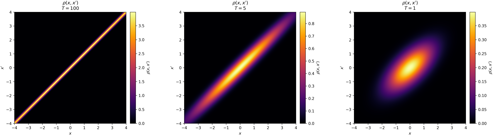
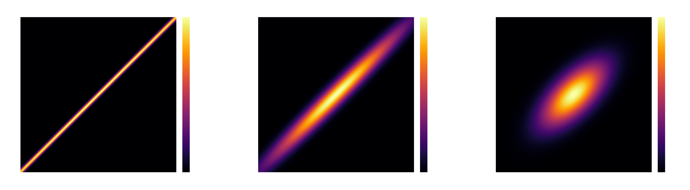
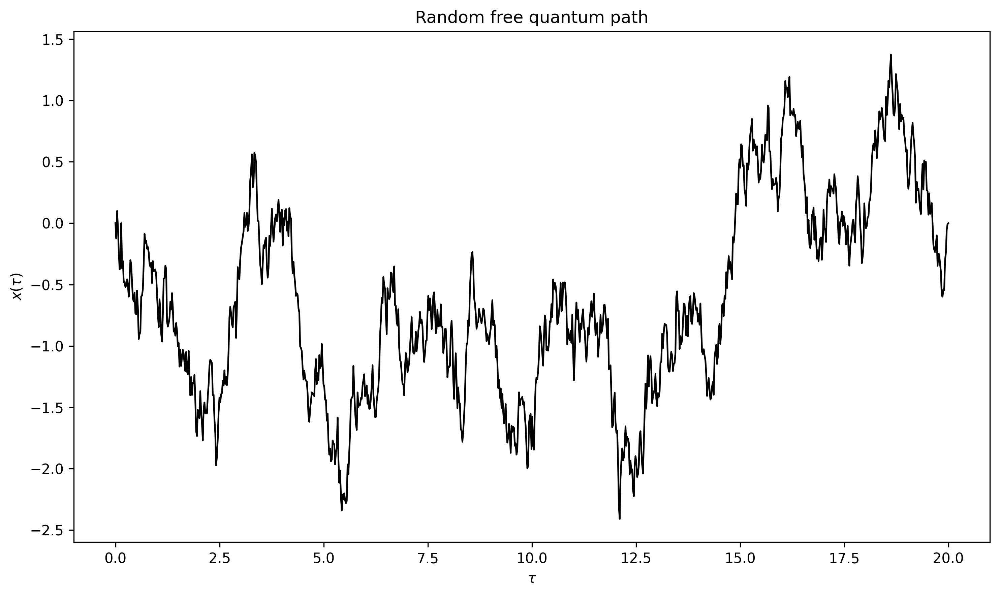
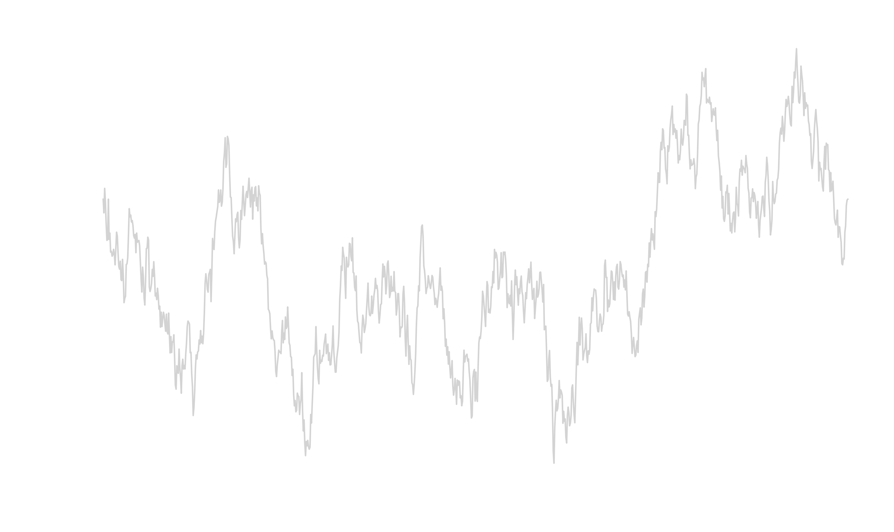

Over the last couple of weeks, I've been diving deep into statistical mechanics. Recently, World Quantum Day on April 14th inspired me to revisit quantum statistical mechanics. Somewhat by accident, this exploration brought me full circle, taking me all the way back to classical statistical mechanics.
As we derived in previous posts, the Boltzmann distribution governs the energy spread of classical particles in thermal equilibrium. The probability of finding the system in a specific state \(n\) with energy \(E_n\) is proportional to the Boltzmann factor, \(e^{-\beta E_n}\).
In contrast, quantum mechanics dictates through the Born rule that the conditional probability density of finding a particle in a specific position \(x\), given that it is in quantum state \(n\), is the squared modulus of its wave function:
$$P(x|n) = |\psi_n(x)|^2 = \psi_n(x)\psi^*_n(x)$$By merging these two seemingly incompatible descriptions, we can derive a powerful framework known as the quantum path integral. This framework is useful in simulating quantum mechanical systems, e.g. systems at low temperatures, which will come in handy in the next post. It also reveals a beautiful equivalence between quantum mechanics and classical diffusion, demonstrating how the behavior of quantum superpositions can be accurately simulated using simple classical random walks.
The Density Matrix
Let's construct the joint probability of finding a system in both a specific energy state (dictated by statistical mechanics) and a specific spatial position (dictated by quantum mechanics). Using standard probability rules and ignoring normalization constants for a moment, we get:
$$P(n, x) = P(n) \times P(x|n) \propto e^{-\beta E_n} \psi_n(x)\psi^*_n(x)$$In general, the energy levels (eigenvalues) and wave functions (eigenstates) of a quantum system can be exceedingly difficult to calculate explicitly. However, if we only care about the position \(x\), we can calculate the marginal probability density \(P(x)\) by summing over all possible energy states \(n\):
$$P(x) \propto \rho(x, x, \beta) = \sum_n e^{-\beta E_n} \psi_n(x)\psi^*_n(x)$$This summation leads us to the diagonal elements of what is known as the (thermal) density matrix, denoted by \(\rho\). However, this matrix is much richer than a simple marginal probability. If we introduce a second, distinct position variable \(x' \neq x\), the expression \(\psi_n(x)\psi_n^*(x')\) is generally a complex number, not a physical probability.
These off-diagonal elements, \(\rho(x, x', \beta)\), are known as interference terms and encode spatial phase correlations. They provide deep insights into the quantum mechanical properties of the system. Specifically, they quantify the capacity for interference when a particle exists in a superposition of being located at both \(x\) and \(x'\).
When an off-diagonal element approaches zero, it indicates that the quantum phase correlation between those two spatial points has been destroyed, typically due to thermal fluctuations. This makes physical sense when considering temperature dependence. The thermodynamic beta is defined as \(\beta = \frac{1}{k_B T}\). At high temperatures \(T\) (small \(\beta\)), a massive number of excited energy states become thermally accessible. Summing over these widely varying wave functions causes destructive interference, washing out the off-diagonal terms and leaving us with classical thermal chaos.
The Free Particle Density Matrix
To better understand and visualize the meaning of the density matrix, it is useful to consider the simplest example: a free particle moving in an infinite one-dimensional space.
For a free particle, energy levels are not quantized into discrete steps. Instead, the particle can possess any continuous momentum \(p\), meaning we must integrate over all possible momenta rather than sum over discrete states:
$$\rho(x, x') = \int_{-\infty}^{\infty} dp \, e^{-\beta E_p} \psi_p(x)\psi_p^*(x')$$The energy eigenvalue \(E_p = \frac{p^2}{2m}\) depends only on the momentum \(p\) and mass \(m\), with corresponding position-space wave functions given by plane waves:
$$\psi_p(x) = \frac{1}{\sqrt{2\pi\hbar}} e^{i p x / \hbar}$$Substituting these into the density matrix definition, we obtain:
$$\rho(x, x') = \int_{-\infty}^{\infty} dp \, e^{-\beta \frac{p^2}{2m}} \left( \frac{1}{\sqrt{2\pi\hbar}} e^{i p x / \hbar} \right) \left( \frac{1}{\sqrt{2\pi\hbar}} e^{-i p x' / \hbar} \right)$$Derivation details
The derivation relies on algebraic simplifications and a well-known Gaussian integral.
After pulling out the constants and combining the exponents, we get:
$$\rho(x, x') = \frac{1}{2\pi\hbar} \int_{-\infty}^{\infty} dp \, e^{ -\frac{\beta}{2m} p^2 + \frac{i(x - x')}{\hbar} p }$$We recognize a familiar Gaussian integral over the momentum \(p\), which we can evaluate easily using the standard formula:
$$\int_{-\infty}^{\infty} e^{-A p^2 + B p} dp = \sqrt{\frac{\pi}{A}} e^{B^2 / 4A}$$By matching the terms, we identify our constants \(A\) and \(B\):
$$\sqrt{\frac{\pi}{A}} = \sqrt{\frac{2m\pi}{\beta}}$$And the exponent term becomes:
$$\frac{B^2}{4A} = \frac{\left( \frac{i(x - x')}{\hbar} \right)^2}{4 \left( \frac{\beta}{2m} \right)} = \frac{-\frac{(x - x')^2}{\hbar^2}}{\frac{2\beta}{m}} = - \frac{m}{2\beta\hbar^2} (x - x')^2$$Finally, we multiply by the \(\frac{1}{2\pi\hbar}\) constant from our simplified integral expression:
$$\rho(x, x') = \frac{1}{2\pi\hbar} \sqrt{\frac{2m\pi}{\beta}} e^{ - \frac{m}{2\beta\hbar^2} (x - x')^2 }$$By simplifying the prefactor and recalling that \(\beta = \frac{1}{k_B T}\), we arrive at the final expression for the free particle density matrix.
Now, let's take a look at the diagonal elements where \(x = x'\). The distance term in the exponent vanishes to \(0\), collapsing the matrix to a constant:
$$\rho(x, x) = \sqrt{\frac{m k_B T}{2\pi \hbar^2}}$$Interestingly, the result does not depend on \(x\), which means a perfectly free particle is equally likely to be found anywhere in space.
More generally, the off-diagonal elements follow a Gaussian decay governed by the temperature \(T\) and the spatial separation \((x - x')\). In the quantum limit, as \(T\) approaches absolute zero, we can move \(x\) and \(x'\) far apart while the exponential term remains close to \(1\). The Gaussian broadens out, meaning the particle's quantum wave function smears across space, maintaining phase coherence over macroscopic distances. We can observe this phenomenon visually in the graphs below as temperature decreases.


Trotter Decomposition
The free particle density matrix is an elegant tool, but almost all interesting physical phenomena involve particles interacting with external potentials.
Introducing a potential field complicates our math significantly. The Boltzmann factor in our density matrix equation is more generally governed by the system's Hamiltonian operator, \(\hat{H}\), which represents the total energy. This Hamiltonian is the sum of the kinetic energy operator, \(\hat{K}\), and the potential energy operator, \(\hat{V}\).
For a free particle, \(\hat{H} = \hat{K}\), which made our previous derivation straightforward. But for a trapped particle, the density operator becomes \(e^{-\beta \hat{H}} = e^{-\beta (\hat{K} + \hat{V})}\).
These two operators do not commute (\(\hat{K}\hat{V} \neq \hat{V}\hat{K}\)), meaning we cannot simply split the exponent and write it as \(e^{-\beta\hat{K}}e^{-\beta\hat{V}}\).
The key insight here is that while we cannot split the exponential for low temperatures, we can approximate the split for high temperatures. We will rely on another mathematical trick to bring the system from high to low temperatures shortly.
Because of operator non-commutativity, the Boltzmann factor can be written, according to the Baker-Campbell-Hausdorff formula, as:
$$e^{-\beta(\hat{K}+\hat{V})} = e^{-\beta\hat{K}}e^{-\beta\hat{V}}e^{-\frac{\beta^2}{2}[\hat{K},\hat{V}]}\cdots$$At high temperatures, the inverse temperature \(\beta\) is a tiny fraction, which makes \(\beta^2\) and higher powers even smaller. This means we can write, assuming we replace \(\beta\) with a tiny \(\tau\):
$$e^{-\tau (\hat{K} + \hat{V})} \approx e^{-\tau \hat{K}} e^{-\tau \hat{V}}$$We could also approximate the Boltzmann factor with:
$$e^{-\tau (\hat{K} + \hat{V})} \approx e^{-\tau \hat{V}} e^{-\tau \hat{K}}$$To avoid the asymmetric split, the potential energy operator is usually split into two equal parts and applied on both sides of the kinetic energy operator. This is known as symmetric Trotter splitting (or Strang splitting):
$$e^{-\tau (\hat{K} + \hat{V})} \approx e^{-\frac{\tau}{2} \hat{V}} e^{-\tau \hat{K}} e^{-\frac{\tau}{2} \hat{V}}$$More rigorous argument
A more rigorous argument involves expanding the symmetric operator \(e^{-\tau \frac{\hat{V}}{2}}e^{-\tau \hat{K}} e^{-\tau \frac{\hat{V}}{2}}\) using a Taylor series, with terms up to \(\tau^2\).
First, we write out the individual expansions:
$$\begin{aligned} e^{-\tau \frac{\hat{V}}{2}} &= 1-\frac{\tau}{2}\hat{V}+\frac{\tau^2}{8}\hat{V}^2+\mathcal{O}(\tau^3) \\ e^{-\tau \hat{K}} &= 1-\tau\hat{K}+\frac{\tau^2}{2}\hat{K}^2+\mathcal{O}(\tau^3) \end{aligned}$$By putting these all together and multiplying them out (ignoring terms of order \(\tau^3\) and higher), we can write:
$$\begin{aligned} e^{-\tau \frac{\hat{V}}{2}}e^{-\tau \hat{K}} e^{-\tau \frac{\hat{V}}{2}} &\approx \left(1-\frac{\tau}{2}\hat{V}+\frac{\tau^2}{8}\hat{V}^2\right)\left(1-\tau\hat{K}+\frac{\tau^2}{2}\hat{K}^2\right)\left(1-\frac{\tau}{2}\hat{V}+\frac{\tau^2}{8}\hat{V}^2\right) \\ &= 1 - \tau(\hat{K} + \hat{V}) + \frac{\tau^2}{2}\left(\hat{K}^2 + \hat{K}\hat{V} + \hat{V}\hat{K} + \hat{V}^2\right) \\ &= 1 - \tau(\hat{K} + \hat{V}) + \frac{\tau^2}{2}(\hat{K} + \hat{V})^2 \end{aligned}$$Notice that this result perfectly matches the analytical Taylor expansion of the exact Boltzmann factor \(e^{-\tau (\hat{K} + \hat{V})}\) up to the second order!
On the other hand, evaluating the asymmetric split \(e^{-\tau \hat{V}} e^{-\tau \hat{K}}\) leaves us with:
$$\left(1-\tau\hat{V}+\frac{\tau^2}{2}\hat{V}^2\right)\left(1-\tau\hat{K}+\frac{\tau^2}{2}\hat{K}^2\right) \approx 1 - \tau(\hat{K} + \hat{V}) + \frac{\tau^2}{2}\left(\hat{K}^2 + 2\hat{V}\hat{K} + \hat{V}^2\right)$$Because of the asymmetric \(2\hat{V}\hat{K}\) cross-term, it fails to match the true Taylor expansion. The asymmetric split introduces an error of order \(\mathcal{O}(\tau^2)\), whereas our symmetric split correctly matches the second order terms, pushing the error down to \(\mathcal{O}(\tau^3)\).
With this symmetric split, we can now approximate and plot the density matrix for a particle trapped in a harmonic oscillator, represented by a parabolic potential \(V(x) = \frac{1}{2}x^2\) (assuming natural units where \(\hbar = m = k_B = 1\)). The potential energy suppresses the density matrix at large values of \(x\) and \(x'\). Physically, this confines the particle to the center of the trap.


Quantum Time Evolution
The Trotter decomposition lets us approximate a Hamiltonian by separating the kinetic and potential energy operators. However, as we discussed, this only works reliably at high temperatures due to the small \(\beta\) requirement. To calculate the density matrix for a particle in a potential at low temperatures, we must rely on a convolution property of density matrices.
Before we explore that property, we need to revisit quantum time evolution. According to the Schrödinger equation, the time evolution operator that moves a quantum system forward in time is (again assuming natural units, with \(\hbar=1\)):
$$\hat{U}(t) = e^{-it\hat{H}}$$Derivation details
Starting with the time-dependent Schrödinger equation:
$$\begin{aligned} i\frac{\partial}{\partial t}\psi(t) &= \hat{H}\psi(t) \\ \frac{\partial}{\partial t}\psi(t) &= -i\hat{H}\psi(t) \end{aligned}$$The classic way to solve this kind of differential equation is to separate variables and integrate both sides, here from \(t = 0\) to \(t\):
$$\int_{\psi(0)}^{\psi(t)}\frac{d\psi}{\psi} = \int_0^t -i\hat{H}dt'$$Assuming the Hamiltonian \(\hat{H}\) does not depend explicitly on time \(t\), it can be pulled out of the integral:
$$\ln\left(\frac{\psi(t)}{\psi(0)}\right) = -i\hat{H}t$$Taking the exponential of both sides and substituting \(\psi_0 = \psi(0)\):
$$\psi(t) = e^{-it\hat{H}}\psi_0$$Earlier, we introduced the thermal density operator, \(e^{-\beta\hat{H}}\), which governs the thermodynamic statistical weights. It closely resembles the time evolution operator, and we can map between these two definitions by making a simple substitution:
$$\beta = it$$This substitution is known as the Wick rotation. While it might initially seem like we are bizarrely conflating inverse temperature with imaginary time, this mapping is a rigorous mathematical transformation. In fact, this deep equivalence between statistical mechanics and quantum dynamics forms the entire conceptual foundation of thermal quantum field theory. For our simulation, it gives us exactly the mathematical trick needed to bridge the gap from high temperatures down to low ones.
Now that we have established this relationship between \(\beta\) and imaginary time, we can treat our total inverse temperature like a duration of time. By splitting this "time" into \(N\) small steps, \(\Delta \tau\), we mathematically slice our total \(\beta\) into tiny, high-temperature intervals. By calculating the system's evolution over these microscopic steps, we can add all of them together. This process, analogous to integrating our way through discrete temperature slices, allows us to "cool" the system down to the low-temperature regime. Returning to our replacement of \(\beta\) with a small \(\tau\) to make the Trotter decomposition work, we can now write:
$$e^{-\beta \hat{H}} = e^{-(\tau+\cdots+\tau)\hat{H}} = e^{-\tau \hat{H}} \times e^{-\tau \hat{H}} \times \dots \times e^{-\tau \hat{H}}$$Density Matrix at Low Temperatures
Our goal is to derive the density matrix at low temperatures (large \(\beta\)). To achieve this, we leverage another clever procedure that combines all the insights we've gathered so far: the convolution of density matrices.
Let's look at the following integral, constructed from the basic definition of the density matrix:
$$\begin{aligned} \int dx' \, \rho(x, x', \tau)\rho(x',x'',\tau) &= \int dx'\sum_n\psi_n(x)e^{-\tau E_n}\psi_n^*(x')\sum_m\psi_m(x')e^{-\tau E_m}\psi_m^*(x'') \end{aligned}$$By rearranging the terms to isolate the integral over \(x'\) and combining the sums over the indices \(n\) and \(m\), we can take advantage of the orthogonality of quantum eigenstates. Specifically, \(\int dx' \, \psi_n^*(x')\psi_m(x') = \delta_{nm}\), meaning the integral evaluates to 1 if \(n = m\) and 0 otherwise.
$$\begin{aligned} \int dx' \, \rho(x, x', \tau)\rho(x',x'',\tau) &= \sum_{n,m}\psi_n(x)e^{-\tau E_n}\underbrace{\int dx'\psi_n^*(x')\psi_m(x')}_{\text{orthogonality}}e^{-\tau E_m}\psi_m^*(x'') \\ &= \sum_n\psi_n(x)e^{-2\tau E_n}\psi_n^*(x'') \\ &= \rho(x, x'', 2\tau) \end{aligned}$$This result tells us that to "glue" two temperature slices together between points \(x\) and \(x''\), we must integrate over every possible intermediate spatial point \(x'\). This aligns perfectly with the core principle of the double-slit experiment: a quantum particle explores all possible paths between two points.
On the other hand, if \(\beta\) acts as imaginary time, convolving these matrices is mathematically identical to evolving our quantum system step-by-step through imaginary time, accounting for all possible intermediate spatial trajectories along the way.
We can recursively apply this convolution property to keep adding temperature slices, \(\tau\), until they sum up to our total target cold temperature, \(\beta\).
Path Integrals
We have arrived at a recursive algorithm that lets us write the density matrix between two endpoints, \(x_0\) and \(x_N\) as a multidimensional integral over \(N-1\) intermediate points. By slicing \(\beta = N\tau\) and updating our notation for clarity, we have:
$$\rho(x_0, x_N, \beta) = \int dx_1 dx_2 \dots dx_{N-1} \, \rho(x_0, x_1, \tau)\rho(x_1, x_2, \tau)\dots\rho(x_{N-1}, x_N, \tau)$$Now, let's borrow a concept from linear algebra: the trace of a matrix, which is simply the sum of its diagonal elements. Since our density matrix is continuous and infinite-dimensional, summing the diagonal elements means setting \(x' = x\) and integrating over all possible space:
$$\text{Tr}(\rho) = \int_{-\infty}^{\infty} \rho(x, x, \beta) \, dx$$Let's plug in our original energy-eigenstate definition of the density matrix. By swapping the order of integration and summation, and pulling terms that do not depend on \(x\) outside the integral, we find:
$$\text{Tr}(\rho) = \int_{-\infty}^{\infty} \left( \sum_n e^{-\beta E_n} \psi_n(x)\psi_n^*(x) \right) dx = \sum_n e^{-\beta E_n} \underbrace{ \int_{-\infty}^{\infty} |\psi_n(x)|^2 \, dx }_{1}$$Because the wave functions \(\psi_n(x)\) represent properly normalized probability amplitudes, they integrate exactly to \(1\). We are left with a simple sum over the Boltzmann factors:
$$Z(\beta) = \sum_n e^{-\beta E_n}$$This sum is defined as the partition function, \(Z\). In statistical mechanics, the partition function encodes the total statistical weight of all states a system can be in, allowing us to derive any thermodynamic parameter. We have just shown that the partition function is exactly equal to the trace of the thermal density matrix.
We started by calculating the trace from the eigenstate definition. Now, let's calculate that exact same trace using our sliced, low-temperature convolution formula. To take the trace, we must evaluate only the diagonal elements. This physically requires setting the final position equal to the initial position (\(x_N = x_0\)), and then integrating over that starting point:
$$Z(\beta) = \int dx_0 \int dx_1 dx_2 \dots dx_{N-1} \, \rho(x_0, x_1, \tau)\rho(x_1, x_2, \tau)\dots\rho(x_{N-1}, x_0, \tau)$$We have made a pretty big conceptual leap here. In general, the density matrix \(\rho(x_0, x_N, \beta)\) measures quantum coherence and transition probability amplitudes between two distinct locations. If \(x_0 \neq x_N\), the system is quantum mechanically smeared across space.
But the partition function \(Z(\beta)\) doesn't measure transitions; it measures the total statistical weight of a system resting in thermal equilibrium. By enforcing \(x_N = x_0\), we mathematically demand that the particle starts at \(x_0\), traverses a sequence of intermediate positions across imaginary time, and eventually returns exactly to where it started.
We arrived at the definition of a quantum path integral, a framework originally introduced1 by Richard Feynman in 1948. The thermodynamic properties of our system can be simulated by summing over all possible loops a particle can take through imaginary time from \(0\) to \(\beta\).
This geometric picture aligns with our earlier density matrix visualizations. At high temperatures (small \(\beta\)), a particle experiences minimal quantum fluctuations, so its imaginary-time path remains a tight, highly localized loop around \(x_0\). Conversely, as we lower the temperature (large \(\beta\)), these paths can stretch and wander significantly far from their origin point.
A Different Look at the Schrödinger Equation
Having constructed a quantum path integral that sums over all possible paths across imaginary time, we need a practical method to sample these paths.
We can turn to a classic Monte Carlo simulation where we select a single position \(x_i\) and treat its neighbors, \(x_{i-1}\) and \(x_{i+1}\), as fixed anchors. Then we propose a new position \(x'_i\) by shifting the current position by a value sampled from a uniform distribution:
$$x'_i = x_i + \text{Uniform}(-\delta, \delta)$$Next, we calculate the current and updated probability weights, which are simply a product of elements from the density matrix slices:
-
Old weight (\(W_{old}\)): the density matrix slice from \(x_{i-1} \to x_i\), multiplied by the slice from \(x_i \to x_{i+1}\).
-
New weight (\(W_{new}\)): the density matrix slice from \(x_{i-1} \to x'_i\), multiplied by the slice from \(x'_i \to x_{i+1}\).
We then accept the proposed change according to the Metropolis acceptance criterion, which accepts the move if a uniformly sampled number between 0 and 1 is smaller than the ratio \(r = \frac{W_{new}}{W_{old}}\).
While we are glossing over a few implementation details, this Monte Carlo algorithm is a standard approach in computational physics. Simulating the quantum path for many intermediate points yields the following result:


Visually, this closely resembles the well-known stochastic process called the Wiener process, and it turns out they are mathematically equivalent concepts. We can check the free density matrix
$$\rho_{free}(x_i, x_{i-1}, \Delta\tau) = \sqrt{\frac{m}{2\pi \hbar^2 \Delta\tau}} \exp\left( - \frac{m}{2\hbar^2\Delta\tau} (x_i - x_{i-1})^2 \right)$$against the properties necessary for the construction of the Wiener process:
- Initialization: In our simulations, we pin the initial position at time \(0\).
- Independent increments: In the path integral formulation, the total weight of the path is the product of the individual slices. The slice from \(x_{i-1} \to x_i\) is mathematically decoupled from the slice from \(x_i \to x_{i+1}\).
- The free density matrix is a Gaussian (as shown earlier) with the mean \(\mu = x_{i-1}\) and variance \(\sigma^2 = \frac{\hbar^2}{m}\Delta\tau\).
This brings us to the final observation connecting quantum mechanics with statistical mechanics. Since quantum paths are governed by the Schrödinger equation and the Wiener process by the diffusion equation, a deep mathematical connection should exists between them.
Going back to the time-dependent Schrödinger equation for a free particle with \(\hat{H} = -\frac{\hbar^2}{2m}\frac{\partial^2}{\partial x^2}\) (reintroducing \(\hbar\) for clarity):
$$i\hbar\frac{\partial}{\partial t}\psi(x, t) = -\frac{\hbar^2}{2m}\frac{\partial^2\psi(x, t)}{\partial x^2}$$Let's perform the Wick rotation and change time into imaginary time, \(t=-i\tau\):
$$\begin{aligned} i\hbar \frac{\partial \psi(x, \tau)}{\partial (-i\tau)} &= -\frac{\hbar^2}{2m} \frac{\partial^2 \psi(x, \tau)}{\partial x^2} \\\\ -\hbar \frac{\partial \psi(x, \tau)}{\partial \tau} &= -\frac{\hbar^2}{2m} \frac{\partial^2 \psi(x, \tau)}{\partial x^2} \\\\ \frac{\partial \psi(x, \tau)}{\partial \tau} &= \frac{\hbar}{2m} \frac{\partial^2 \psi(x, \tau)}{\partial x^2} \end{aligned}$$For classical particles undergoing Brownian motion, the probability density \(P(x, t)\) of finding the particle at position \(x\) and time \(t\) is governed by the diffusion equation:
$$\frac{\partial P(x, t)}{\partial t} = D \frac{\partial^2 P(x, t)}{\partial x^2}$$Comparing these two equations, they are algebraically identical with the diffusion constant \(D\) equal to \(\frac{\hbar}{2m}\). Through what is known as the Feynman-Kac formula, this reveals that we can accurately simulate quantum mechanics using classical random walks.
Summary
We set out to describe a physical system using two fundamentally different frameworks: statistical mechanics and quantum mechanics. The density matrix served as our primary mathematical bridge, describing how quantum coherence decays under thermal chaos. From there, we worked through high-temperature approximations and a method of stitching them together, which eventually built the foundation for Feynman's path integral framework. Finally, we came full circle: by rotating through imaginary time (the Wick rotation), we returned to the classical diffusion equation and random walks, demonstrating a pretty beautiful example of a classical-quantum isomorphism.